Hướng dẫn cách tính giá thành theo phương pháp hệ số tỷ lệ trên phần mềm Misa theo Thông tư 200/2014/TT-BTC
I. Tổng quan về cách tính giá thành theo phương pháp hệ số tỷ lệ trên Misa theo Thông tư 200/2014/TT-BTC
1. Điều kiện áp dụng tính giá thành theo phương hệ số tỷ lệ
Áp dụng cho các doanh nghiệp có quy trình sản xuất sử dụng cùng loại nguyên vật liệu chính và tạo ra nhiều sản phẩm/nhóm sản phẩm khác nhau. Trong đó, đối tượng tập hợp chi phí là toàn bộ quy trình công nghệ và đối tượng tính giá thành là từng sản phẩm/nhóm sản phẩm hoàn thành.
Áp dụng cho các doanh nghiệp có quy trình sản xuất sử dụng cùng loại nguyên vật liệu chính và tạo ra nhiều sản phẩm/nhóm sản phẩm khác nhau. Trong đó, đối tượng tập hợp chi phí là toàn bộ quy trình công nghệ và đối tượng tính giá thành là từng sản phẩm/nhóm sản phẩm hoàn thành.
-
Ví dụ như: doanh nghiệp sản xuất các mặt hàng như đá các loại, gạch các loại,…
2. Các bước tính giá thành theo phương pháp hệ số tỷ lệ trên Misa theo Thông tư 200/2014/TT-BTC
-
Bước 1: Khai báo nguyên vật liệu sản xuất và thành phẩm
-
Bước 2: Khai báo đối tượng tập hợp chi phí
-
Bước 3: Xuất kho nguyên vật liệu sản xuất
-
Bước 4: Hạch toán các chi phí phát sinh
-
Bước 5: Nhập kho thành phẩm sản xuất
-
Bước 6: Xác định kỳ tính giá thành
-
Bước 7: Khai báo định mức giá thành thành phẩm
-
Bước 8: Tính giá thành thành phẩm
-
Bước 9: Kết chuyển chi phí
II. Chi tiết từng bước tính giá thành theo phương pháp hệ số tỷ lệ trên Misa theo Thông Tư 200/2014/TT-BTC
Bước 1: Khai báo nguyên vật liệu sản xuất và thành phẩm
- Vào "Danh mục" => chọn "Vật tư hàng hoá" => "Vật tư hàng hoá" => chọn chức năng "Thêm".
- Khai báo nguyên vật liệu hoặc thành phẩm:
- Khai báo nguyên vật liệu hoặc thành phẩm:
+ Nếu khai báo nguyên vật liệu, sẽ chọn tính chất là "Vật tư hàng hoá".
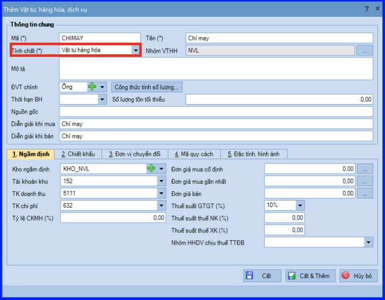
+ Nếu khai báo thành phẩm, sẽ chọn tính chất là "Thành phẩm".
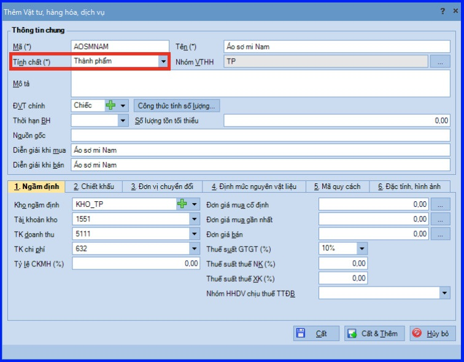
CHÚ Ý: Khi khai báo thành phẩm, thực hiện khai báo thêm định mức nguyên vật liệu sử dụng để sản xuất ra thành phẩm bên tab "Định mức nguyên vật liệu".
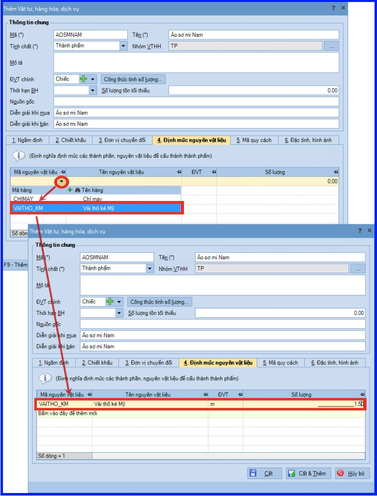
+ Sau khi khai báo xong, các bạn ấn "Cất".
Bước 2: Khai báo đối tượng tập hợp chi phí
- Vào "Danh mục" => chọn "Đối tượng tập hợp chi phí" => chọn chức năng "Thêm".
- Chọn loại đối tượng tập hợp chi phí là "Phân xưởng".
- Khai báo thông tin về đối tượng THCP và chọn đối tượng tính giá thành.
- Các bạn ấn "Cất".
- Chọn loại đối tượng tập hợp chi phí là "Phân xưởng".
- Khai báo thông tin về đối tượng THCP và chọn đối tượng tính giá thành.
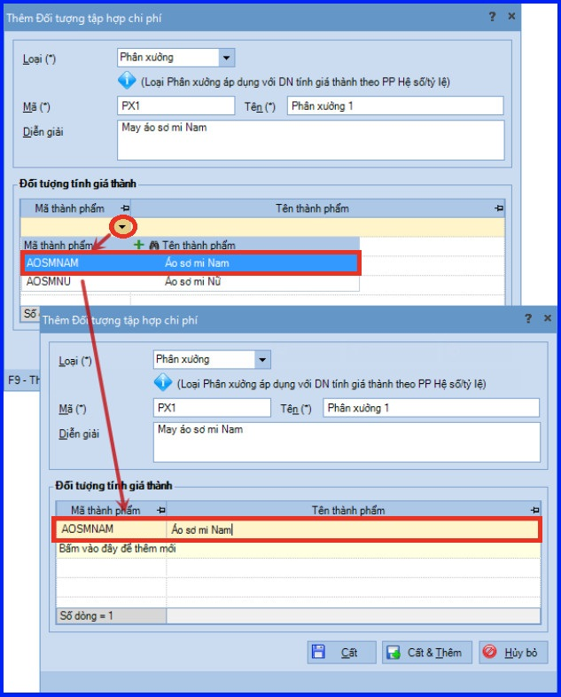
- Các bạn ấn "Cất".
CHÚ Ý: Với phương pháp tính giá theo hệ số, tỷ lệ, mỗi đối tượng tập hợp chi phí có thể bao gồm một hoặc nhiều thành phẩm cần sản xuất ra.
Bước 3: Xuất kho nguyên vật liệu sản xuất
- Vào phân hệ "Kho" => chọn tab "Lệnh sản xuất" => chọn chức năng "Thêm".
- Khai báo lệnh sản xuất.
- Chọn các thành phẩm và nhập số lượng cần sản xuất, hệ thống sẽ tự động tính ra số lượng nguyên vật liệu cần để sản xuất căn cứ vào thông tin định mức Nguyên vật liệu đã được thiết lập ở Bước 1.
- Các bạn ấn "Cất".
- Chọn chức năng "Lập phiếu xuất" trên lệnh sản xuất.
- Tích chọn các thành phẩm cần xuất NVL, nhấn "Đồng ý".
- Nhập bổ sung các thông tin còn thiếu cho chứng từ xuất kho như lý do xuất, TK Nợ,…
- Các bạn kiểm tra và Chọn thông tin "Đối tượng THCP" theo phát sinh thực tế bên tab "Thống kê".
- Các bạn ấn "Cất".
- Khai báo lệnh sản xuất.
- Chọn các thành phẩm và nhập số lượng cần sản xuất, hệ thống sẽ tự động tính ra số lượng nguyên vật liệu cần để sản xuất căn cứ vào thông tin định mức Nguyên vật liệu đã được thiết lập ở Bước 1.
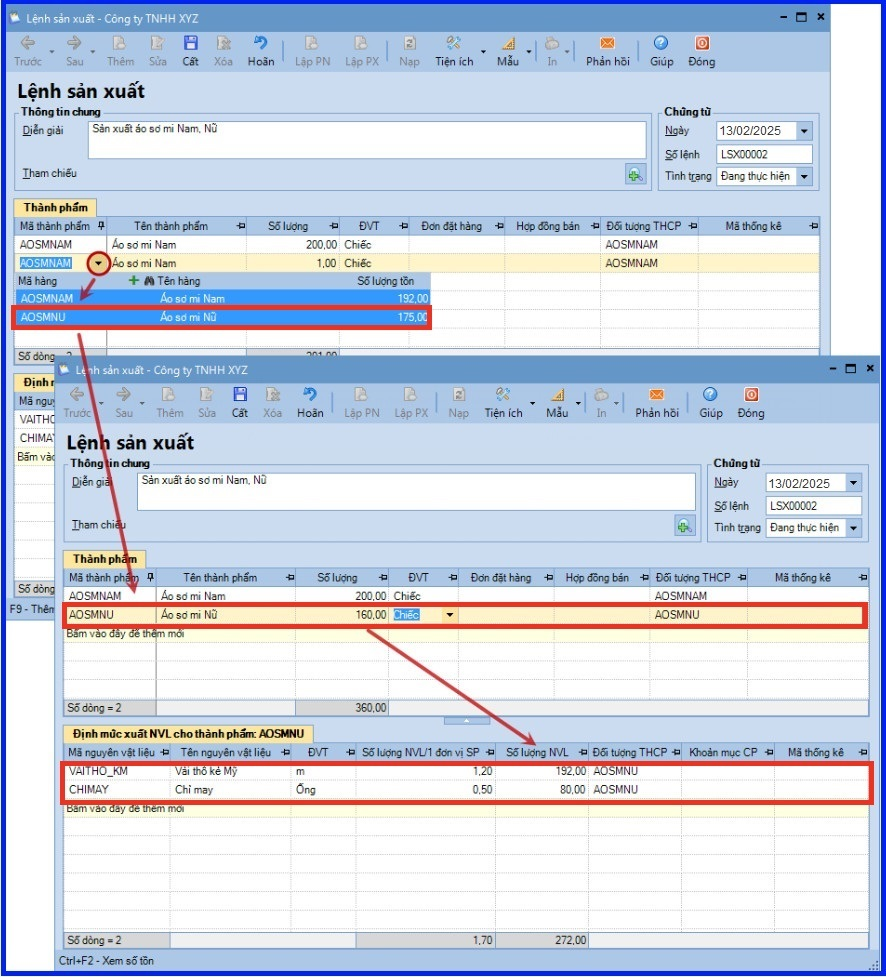
- Các bạn ấn "Cất".
- Chọn chức năng "Lập phiếu xuất" trên lệnh sản xuất.
- Tích chọn các thành phẩm cần xuất NVL, nhấn "Đồng ý".
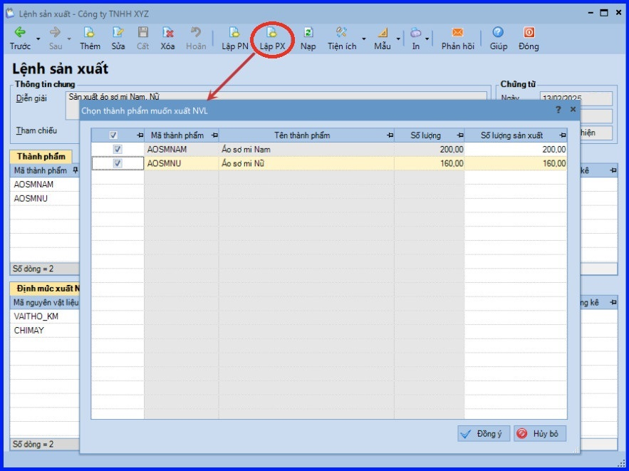
- Nhập bổ sung các thông tin còn thiếu cho chứng từ xuất kho như lý do xuất, TK Nợ,…
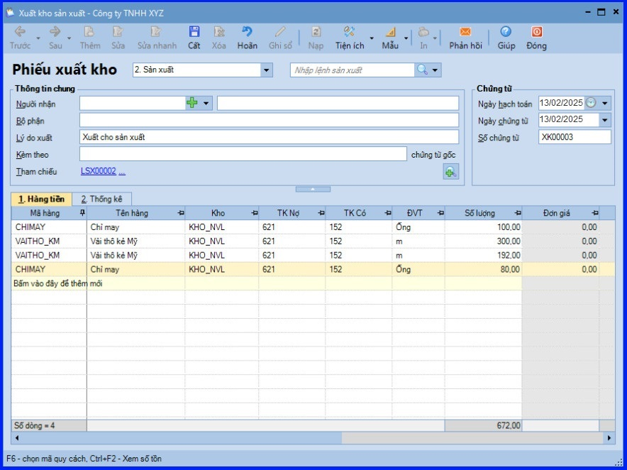
- Các bạn kiểm tra và Chọn thông tin "Đối tượng THCP" theo phát sinh thực tế bên tab "Thống kê".
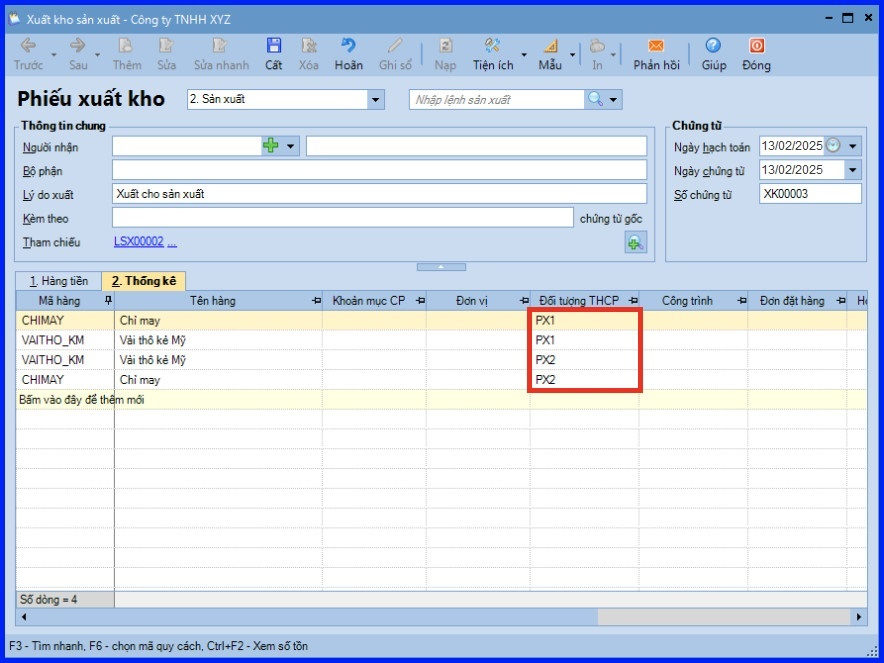
- Các bạn ấn "Cất".
CHÚ Ý:
- Với nguyên vật liệu tính giá xuất kho theo phương pháp "Bình quân cuối kỳ" => đơn giá sẽ được hệ tự động tính sau khi thực hiện chức năng Tính giá xuất kho trên phân hệ "Kho".
- Với nguyên vật liệu tính giá xuất kho theo phương pháp "Bình quân tức thời", "Giá đích danh" và "Nhập trước xuất trước" => đơn giá sẽ được hệ thống tự động tính sau khi chứng từ xuất kho được "Ghi sổ".
- Với những doanh nghiệp không quản lý lệnh sản xuất có thể bỏ qua bước này và vào phân hệ "Kho" => chọn tab "Nhập, xuất kho" để lập chứng từ xuất kho sản xuất.
Bước 4: Hạch toán các chi phí phát sinh
Các chi phí phát sinh liên quan đến việc tính giá thành (Nợ TK 621, 622, 623, 627, 154) có thể được hạch toán trên phân hệ "Quỹ", "Ngân hàng" hoặc "Tổng hợp".
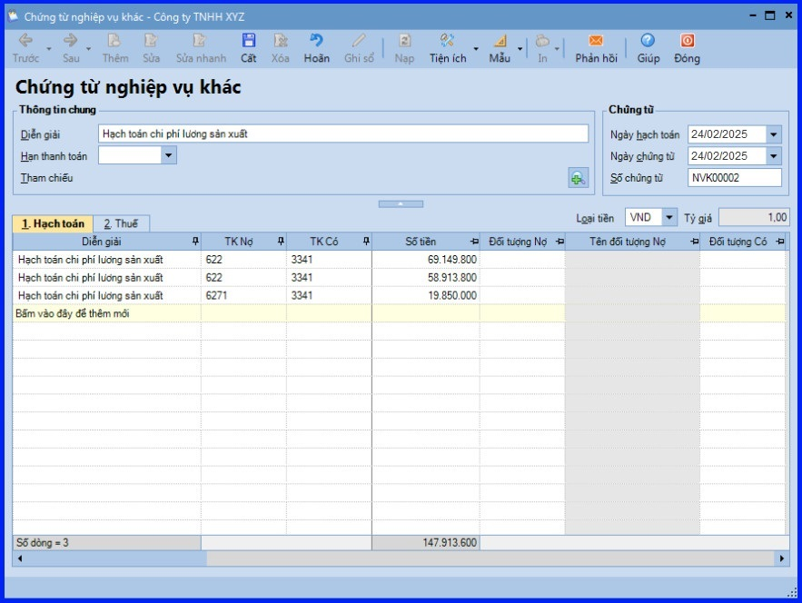
CHÚ Ý:
- Khi hạch toán các chứng từ chi phí phát sinh nếu xác định được là chi phí phát sinh cho đối tượng nào thì chọn thông tin tại cột "Đối tượng THCP" hoặc bỏ trống nếu chưa xác định được đối tượng.
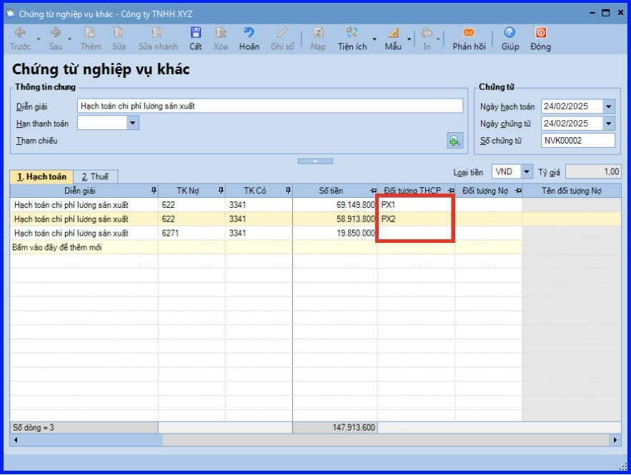
- Tài khoản 623 chỉ áp dụng đối với các những doanh nghiệp trong lĩnh vực xây dựng, những doanh nghiệp có lĩnh vực hoạt động khác thì không chọn tài khoản này.
Bước 5: Nhập kho thành phẩm sản xuất
- Vào phân hệ "Kho" => chọn tab "Nhập, xuất kho" => chọn chức năng "Thêm" => chọn "Nhập kho".
- Chọn loại chứng từ là "Thành phẩm sản xuất".
- Khai báo thành phẩm được nhập kho.
- Khai báo hoặc chọn lại "Đối tượng THCP" theo thực tế phát sinh bên tab "Thống kê".
- Các bạn ấn "Cất".
- Chọn loại chứng từ là "Thành phẩm sản xuất".
- Khai báo thành phẩm được nhập kho.
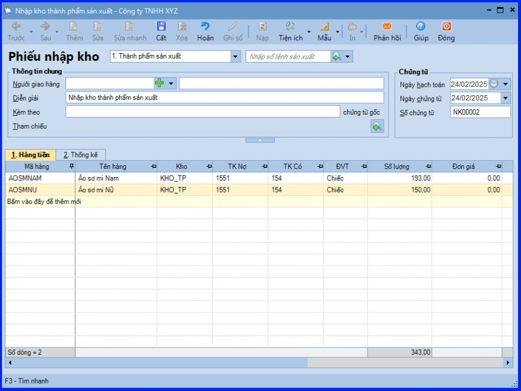
- Khai báo hoặc chọn lại "Đối tượng THCP" theo thực tế phát sinh bên tab "Thống kê".
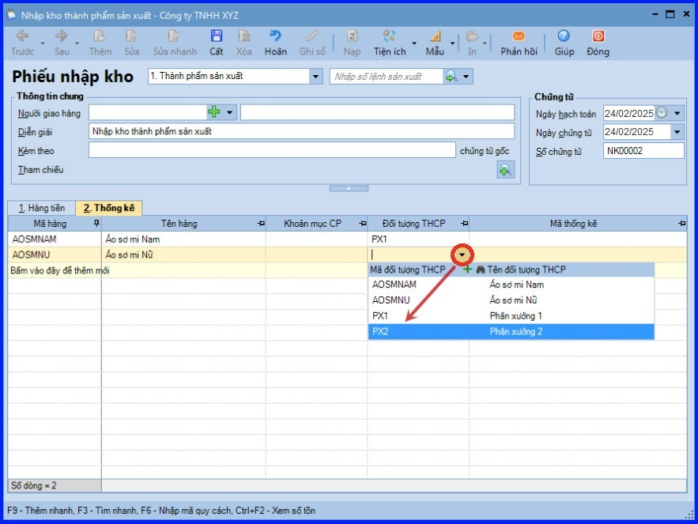
- Các bạn ấn "Cất".
CHÚ Ý: Đơn giá của thành phẩm nhập kho sẽ được hệ thống cập nhật sau khi thực hiện chức năng "Cập nhật giá nhập kho" khi thực hiện Tính giá thành tại Bước 8.
Bước 6: Xác định kỳ tính giá thành
- Vào phân hệ "Giá thành" => chọn tab "Sản xuất liên tục – Hệ số, tỷ lệ" => chọn chức năng "Thêm".
- Chọn kỳ tính giá thành và nhấn nút "Lấy dữ liệu" => phần mềm sẽ tự động lấy lên những đối tượng THCP phát sinh trong kỳ đã khai báo.
- Các bạn ấn "Cất".
- Chọn kỳ tính giá thành và nhấn nút "Lấy dữ liệu" => phần mềm sẽ tự động lấy lên những đối tượng THCP phát sinh trong kỳ đã khai báo.
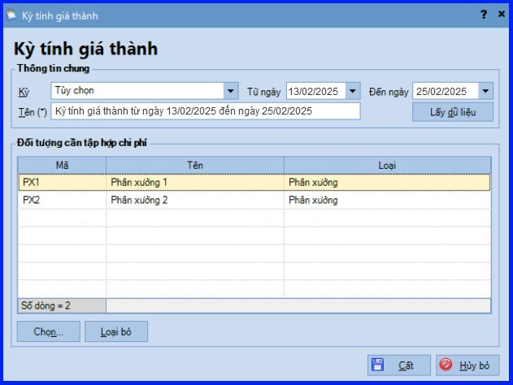
- Các bạn ấn "Cất".
CHÚ Ý: Sử dụng chức năng "Chọn/Loại bỏ" để chọn bổ sung hoặc xóa các đối tượng THCP trên danh sách.
Bước 7: Khai báo định mức giá thành thành phẩm
- Vào menu "Nghiệp vụ" => chọn "Giá thành" => chọn "Sản xuất liên tục hệ số, tỷ lệ" => chọn "Khai báo định mức giá thành thành phẩm".
- Nhập định mức chi phí vào các cột Nguyên vật liệu, nhân công, khấu hao, chi phí mua ngoài, chi phí khác cho các đối tượng tính giá thành đã được khai báo cùng đối tượng THCP tại Bước 2.
- Các bạn ấn "Cất".
- Nhập định mức chi phí vào các cột Nguyên vật liệu, nhân công, khấu hao, chi phí mua ngoài, chi phí khác cho các đối tượng tính giá thành đã được khai báo cùng đối tượng THCP tại Bước 2.
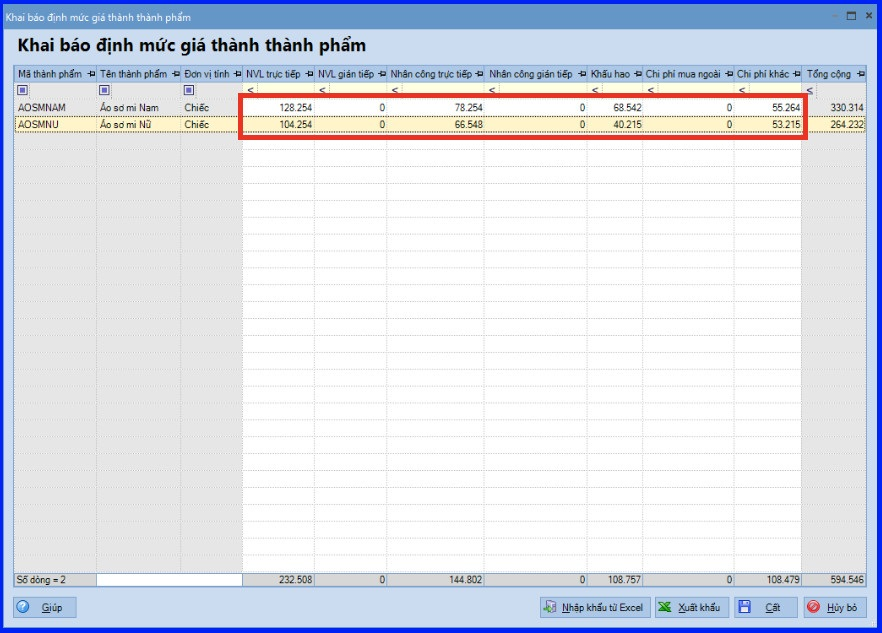
- Các bạn ấn "Cất".
Bước 8: Tính giá thành thành phẩm
Với các doanh nghiệp tính giá xuất kho theo phương pháp "Bình quân cuối kỳ" => trước khi thực hiện tính giá thành cần phải thực hiện chức năng Tính giá xuất kho trên phân hệ "Kho". Sau đó, thực hiện tính giá thành theo hướng dẫn sau:
- Vào phân hệ "Giá thành" => chọn tab "Sản xuất liên tục – Hệ số, tỷ lệ".
- Chọn kỳ tính giá thành trên danh sách và chọn chức năng "Tính giá thành" bên thanh tác nghiệp (hoặc nhấn chuột phải, chọn chức năng "Tính giá thành").
- Các bạn ấn "Đồng ý".
- Việc tính giá thành theo phương pháp hệ số, tỷ lệ sẽ được thực hiện theo 4 bước sau:
- Vào phân hệ "Giá thành" => chọn tab "Sản xuất liên tục – Hệ số, tỷ lệ".
- Chọn kỳ tính giá thành trên danh sách và chọn chức năng "Tính giá thành" bên thanh tác nghiệp (hoặc nhấn chuột phải, chọn chức năng "Tính giá thành").
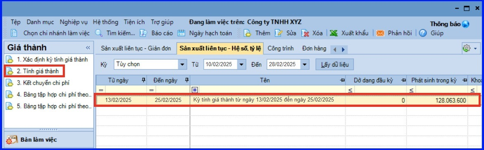
- Các bạn ấn "Đồng ý".
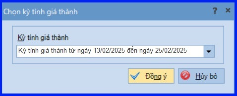
- Việc tính giá thành theo phương pháp hệ số, tỷ lệ sẽ được thực hiện theo 4 bước sau:
+ Phần 1 - Phân bổ chi phí chung: hệ thống sẽ tổng hợp các chứng từ xuất kho NVL (TK 621), hạch toán chi phí lương (TK 622), chi phí sản xuất chung (TK 627) chưa có thông tin "Đối tượng THCP" để thực hiện việc phân bổ:
- Nhập tỷ lệ phân bổ và lựa chọn tiêu thức phân bổ.
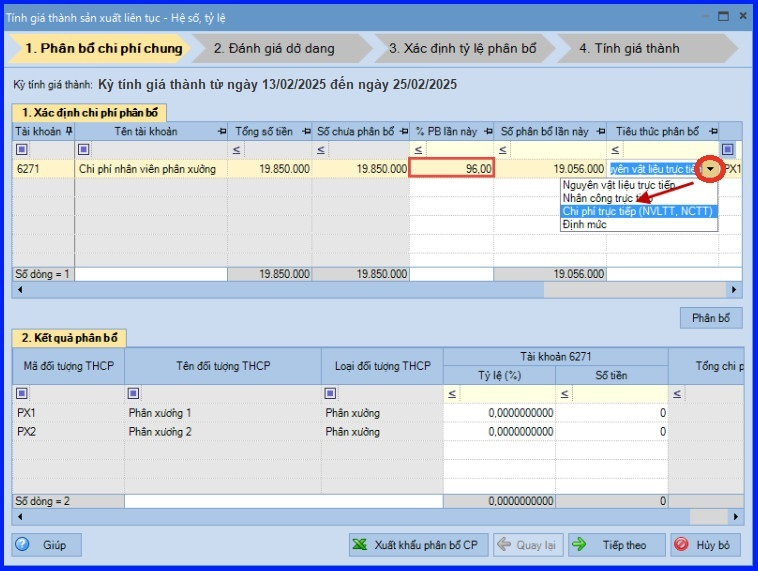
- Nhấn "Phân bổ" => hệ thống sẽ tự động phân bổ chi phí theo từng đối tượng tập hợp chi phí trong kỳ tính giá thành.
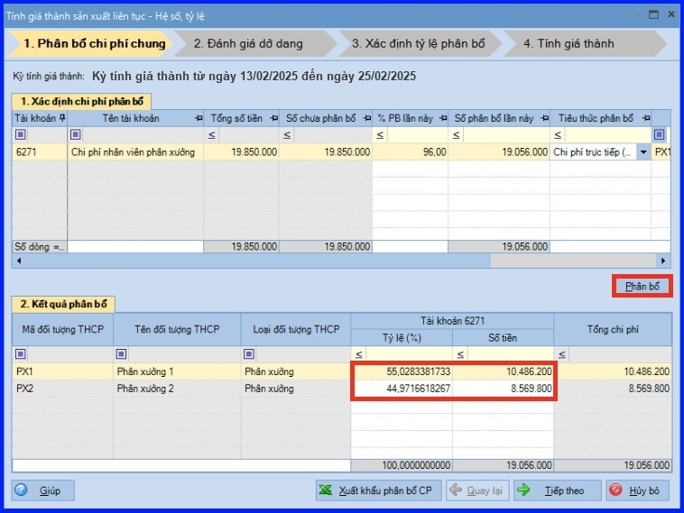
CHÚ Ý:
-
Có thể kiểm tra danh sách chứng được tổng hợp để phân bổ chi phí chung bằng cách sử dụng chức năng "Xem" tại cột "Chi tiết chứng từ" trên tab "Xác định chi phí phân bổ".
-
Để phân bổ được chi phí chung theo "Định mức", cần khai báo định mức chi phí cho từng đối tượng THCP trên menu "Nghiệp vụ" => chọn "Giá thành" => chọn "Sản xuất liên tục – hệ sổ, tỷ lệ" => chọn "Khai báo định mức phân bổ chi phí theo đối tượng THCP".
-
Sau khi tính giá thành xong, có thể kiểm tra thông tin chi phí chung được phân bổ trên tab "Bảng phân bổ chi phí chung" của màn hình danh sách kỳ tính giá thành.
-
Cho phép copy nhiều dòng excel vào cột “Tỷ lệ (%)” khi phân bổ chi phí chung và cột “Hệ số” cho từng thành phẩm
- Các bạn ấn "Tiếp theo" để chuyển sang bước "Đánh giá dở dang".
+ Phần 2 - Đánh giá dở dang: trường hợp kết thúc kỳ tính giá thành vẫn còn có các thành phẩm chưa sản xuất xong, kế toán cần xác định giá trị dở dang cuối kỳ cho từng đối tượng THCP:
- Lựa chọn tiêu thức đánh giá dở dang và nhập số lượng dở dang kèm tỷ lệ hoàn thành của các thành phẩm dở dang.
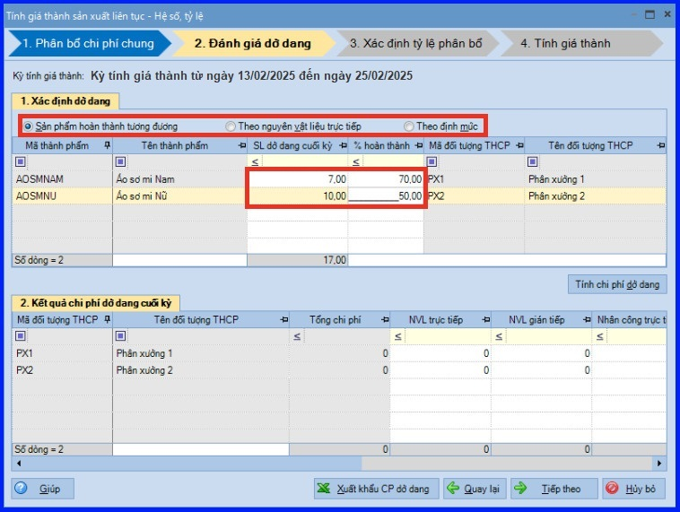
- Các bạn ấn "Tính chi phí dở dang" => hệ thống sẽ tự động xác định chi phí dở dang cho từng đối tượng tập hợp chi phí.
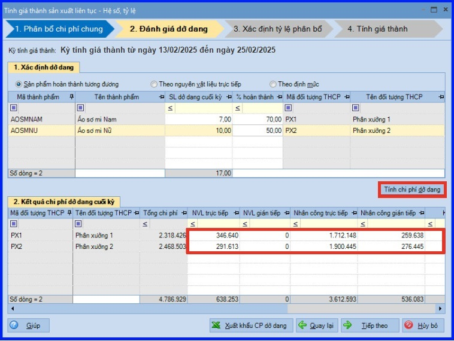
CHÚ Ý:
-
Để đánh giá được chi phí dở dang cuối kỳ theo "Định mức", cần khai báo định mức chi phí cho từng đối tượng THCP trên menu "Nghiệp vụ" => chọn "Giá thành" => chọn "Sản xuất liên tục – Hệ số, tỷ lệ" => chọn "Khai báo định mức phân bổ chi phí theo đối tượng THCP".
-
Sau khi tính giá thành xong, có thể kiểm tra thông tin dở dang cuối kỳ thông qua Bảng tập hợp chi phí theo yếu tố hoặc Bảng tập hợp chi phí theo khoản mục (chức năng chuột phải tại màn hình danh sách kỳ tính giá thành).
- Các bạn ấn "Tiếp theo" để chuyển sang bước "Xác định tỷ lệ phân bổ".
+ Phần 3 - Xác định tỷ lệ phân bổ: áp dụng trong trường hợp đối tượng tập hợp chi phí gồm nhiều thành phẩm cần sản xuất:
- Lựa chọn phương thức phân bổ.
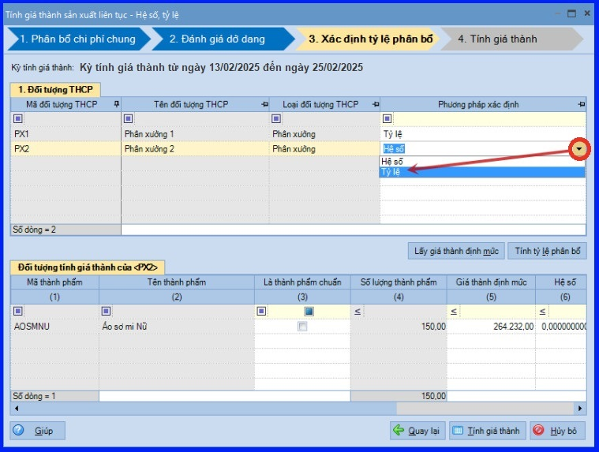
- Nhấn "Tính tỷ lệ phân bổ" => hệ thống tự động tính tỷ lệ phân bổ cho từng thành phẩm thuộc đối tượng tính giá thành.
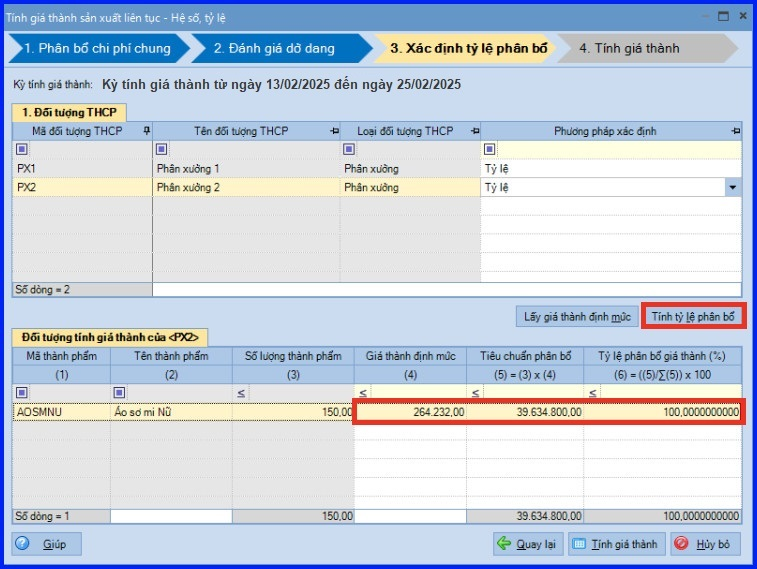
CHÚ Ý:
-
Nếu lựa chọn phương pháp phân bổ là "Hệ số", sau khi thực hiện "Tính tỷ lệ phân bổ" => hệ thống sẽ chọn thành phẩm có số lượng lớn nhất trong kỳ tính giá thành làm "Thành phẩm chuẩn" và mặc định hệ số là "1".
- Trường hợp muốn thay đổi thông tin về "Thành phẩm chuẩn" => các bạn phải thực hiện lại chức năng "Tính tỷ lệ phân bổ" để hệ thống tự động tính lại tỷ lệ phân bổ giữa các thành phẩm.
-
Sau khi tính giá thành xong, có thể kiểm tra tỷ lệ phân bổ cho kỳ tính giá thành trên tab "Bảng xác định tỷ lệ phân bổ giá thành" của màn hình danh sách kỳ tính giá thành.
- Nhấn "Tính giá thành" để chuyển sang bước "Tính giá thành".
+ Phần 4 - Tính giá thành: hệ thống tự động tính ra giá thành cho từng đối tượng THCP.
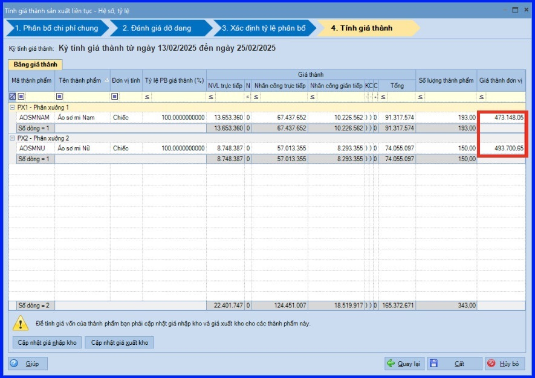
- Sau khi thực hiện tính giá thành xong, nếu chọn:
- "Cập nhật giá nhập kho" => hệ thống sẽ cập nhật giá thành vừa tính được vào chứng từ nhập kho thành phẩm ở Bước 5.
- "Cập nhật giá xuất kho" => hệ thống sẽ tính ra giá cho các thành phẩm khi xuất kho.
- Các bạn ấn "Cất".
CHÚ Ý:
-
Sau khi tính giá thành xong, có thể kiểm tra lại giá thành của từng thành phẩm trên tab "Bảng tính giá thành" của màn hình danh sách kỳ tính giá thành.
-
Trường hợp muốn kiểm tra lại các khoản chi phí trực tiếp, phục vụ cho việc tính giá thành hoặc các khoản chi phí làm giảm giá thành của thành phẩm, kế toán nhấn chuột phải tại màn hình danh sách kỳ tính giá thành và chọn chức năng "Tập hợp chi phí trực tiếp" hoặc "Tập hợp khoản giảm giá thành".
Bước 9: Kết chuyển chi phí
- Vào phân hệ "Giá thành" => chọn tab "Sản xuất liên tục – Hệ số, tỷ lệ".
- Chọn kỳ tính giá thành trên danh sách và chọn chức năng "Kết chuyển chi phí" bên thanh tác nghiệp (hoặc nhấn chuột phải, chọn chức năng "Kết chuyển chi phí").
- Các bạn ấn "Đồng ý" => hệ thống sẽ tự động tổng hợp chi phí từ các TK 621, 622, 627,… để kết chuyển sang 154.
- Kiểm tra chứng từ kết chuyển chi phí.
- Các bạn ấn "Cất".
- Vào phân hệ "Giá thành" => chọn tab "Sản xuất liên tục – Hệ số, tỷ lệ".
- Chọn kỳ tính giá thành trên danh sách và chọn chức năng "Kết chuyển chi phí" bên thanh tác nghiệp (hoặc nhấn chuột phải, chọn chức năng "Kết chuyển chi phí").
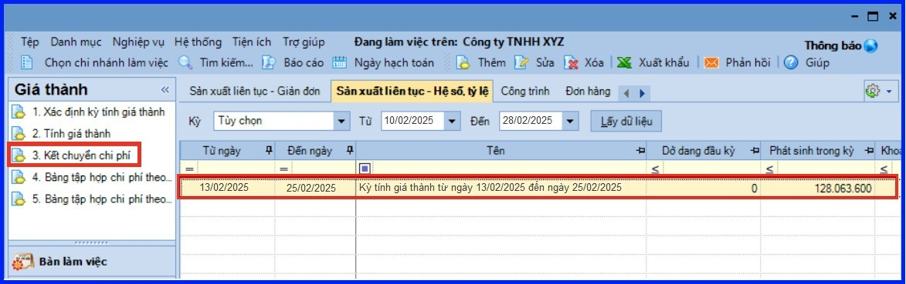
- Các bạn ấn "Đồng ý" => hệ thống sẽ tự động tổng hợp chi phí từ các TK 621, 622, 627,… để kết chuyển sang 154.
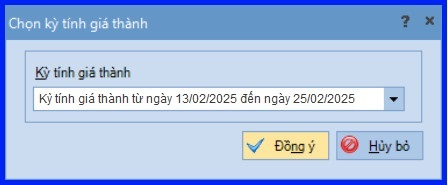
- Kiểm tra chứng từ kết chuyển chi phí.
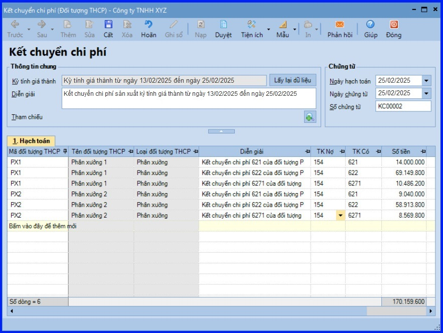
- Các bạn ấn "Cất".
CHÚ Ý: Trường hợp muốn xem lại các chứng từ kết chuyển chi phí đã lập trước đó.
- Chọn chức năng "Duyệt" trên chứng từ "Kết chuyển chi phí".
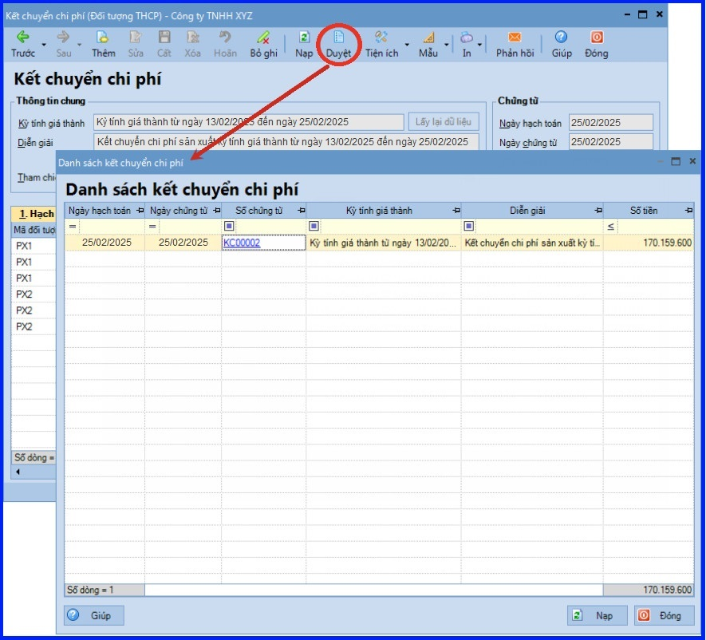
- Hoặc vào menu "Nghiệp vụ" => chọn "Giá thành" => chọn "Sản xuất liên tục hệ số, tỷ lệ" => chọn "Kết chuyển chi phí" để kiểm tra.
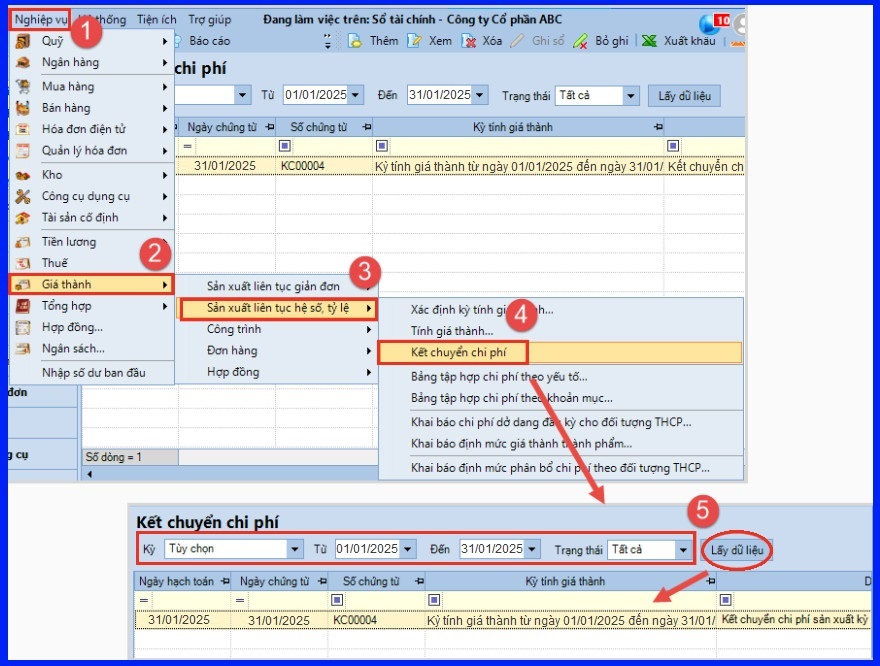
KẾ TOÁN DIỆU TÂM chúc các bạn làm tốt!
=============================
Nếu bạn muốn thành thạo các kỹ năng làm kế toán trên phần mềm Misa
Thì bạn có thể tham khảo "Khóa Học Thực Hành Kế Toán Trên Phần Mềm Misa" tại Công ty đào tạo Kế Toán Diệu Tâm
Trong khóa học này, bạn sẽ được dạy cách lên sổ sách, lập báo cáo tài chính trên phần mềm Misa
Chi tiết về chương trình đào tạo bạn xem tại đây nhé: Khóa học thực hành kế toán trên Misa
=============================
=============================
Nếu bạn muốn thành thạo các kỹ năng làm kế toán trên phần mềm Misa
Thì bạn có thể tham khảo "Khóa Học Thực Hành Kế Toán Trên Phần Mềm Misa" tại Công ty đào tạo Kế Toán Diệu Tâm
Trong khóa học này, bạn sẽ được dạy cách lên sổ sách, lập báo cáo tài chính trên phần mềm Misa
Chi tiết về chương trình đào tạo bạn xem tại đây nhé: Khóa học thực hành kế toán trên Misa
=============================